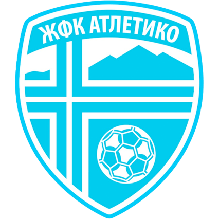

Atletiko vs Kočani
Women's Second League 23/24 - Round 13
Final score : 6 - 0
Date: 20.04.2024 | Time: 14:00 | Stadium: Igralište Pavel Šatev
Referees
- Referee: Antonio Jordanoski
- 1st assistant: David Temelkoski
- 2nd assistant: Oliver Mirčeski
Line-ups

Atletiko
Starting line-up
- 1. Martina Siljanoska üߧ
- 2. Leonora Velkoska ↓46'
- 4. Simona Taseva (C)
- 5. Mihaela Nastovska
- 7. Kristina Veljanovska ⚽︎ 21'
- 8. Evgenija Talevska
- 11. Aneta Markovska ⚽︎ 12' ⚽︎ 32' ↓46'
- 23. Bojana Spasevska ↓46'
- 34. Mina Kovačeska
- 47. Melissa Dimitrioski ⚽︎ 50'
- 72. Mila Talevska ⚽︎ 2' ↓86'
Substitutes
- 3. Stefani Jovanovska
- 6. Stefani Najdovska
- 9. Sarah Dimitrioski ⚽︎ 75' ↑46'
- 10. Marija Stojanovska ↑46'
- 18. Iva Manasijevska
- 33. Jovana Petrovska ↑46'
- 55. Matea Krstevska ↑90'
- 77. Emilija Sterjova ↑86'
- 99. Emilija Petkovska

Starting line-up
- 1. Hristina Gogovska üߧ
- 4. Simona Veselinova (C)
- 7. Nela Doneva
- 8. Eleonora Naneva
- 9. Nadica Geleva ↓46'
- 10. Glorija Stojmilova
- 13. Jasna Zlatkova ↓46'
- 14. Angela Stojmenova
- 17. Andrea Doneva
- 18. Viktorija Gorgieva ︎ 80'
- 19. Viktorija Bogatinova ↓69'
Substitutes
- 12. Ana Manasieva üߧ
- 3. Anastasija Ilijevska ↑46'
- 11. Marija Trajčova ↑69'
- 16. Ana Gorgieva ↑46'
- 20. Teodora Dimitrovska ↑90'
Timeline
- ⚽ 2' - Goal by Mila Talevska (Atletiko)
- ⚽ 12' - Goal by Aneta Markovska (Atletiko)
- ⚽ 21' - Goal by Kristina Veljanovska (Atletiko)
- ⚽ 32' - Goal by Aneta Markovska (Atletiko)
- üîÑ 46' - Substitution in Atletiko: Sarah Dimitrioski (9) comes in for Leonora Velkoska (2)
- üîÑ 46' - Substitution in Atletiko: Marija Stojanovska (10) comes in for Bojana Spasevska (23)
- üîÑ 46' - Substitution in Atletiko: Jovana Petrovska (33) comes in for Aneta Markovska (11)
- üîÑ 46' - Substitution in Koƒçani: Anastasija Ilijevska (3) comes in for Nadica Geleva (9)
- üîÑ 46' - Substitution in Koƒçani: Ana Gorgieva (16) comes in for Jasna Zlatkova (13)
- ⚽ 50' - Goal by Melissa Dimitrioski (Atletiko)
- üîÑ 69' - Substitution in Koƒçani: Marija Trajƒçova (11) comes in for Viktorija Bogatinova (19)
- ⚽ 75' - Goal by Sarah Dimitrioski (Atletiko)
- üü® 80' - Card for Viktorija Gorgieva (Koƒçani)
- üîÑ 86' - Substitution in Atletiko: Emilija Sterjova (77) comes in for Mila Talevska (72)
- üîÑ 90' - Substitution in Atletiko: Matea Krstevska (55) comes in for Evgenija Talevska (8)
- üîÑ 90' - Substitution in Koƒçani: Teodora Dimitrovska (20) comes in for Viktorija Gorgieva (18)